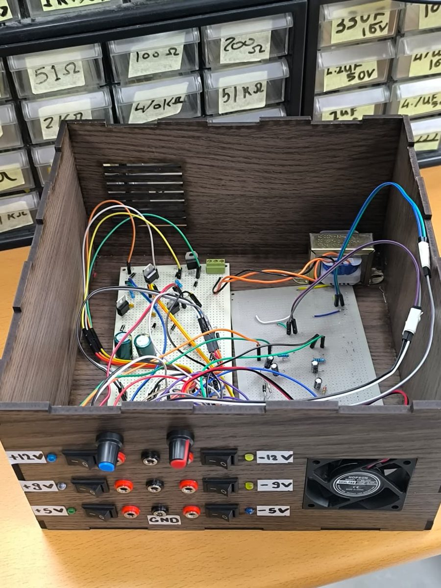
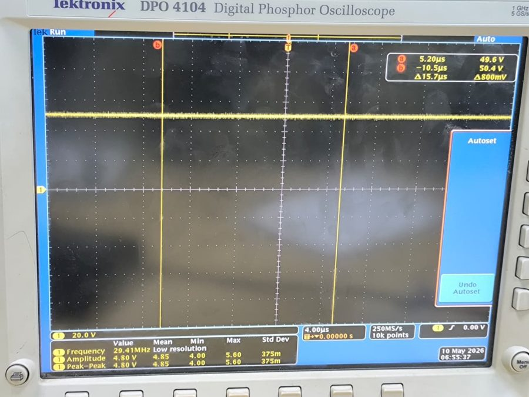
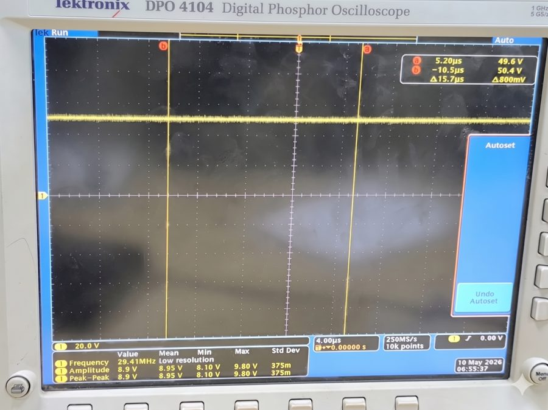
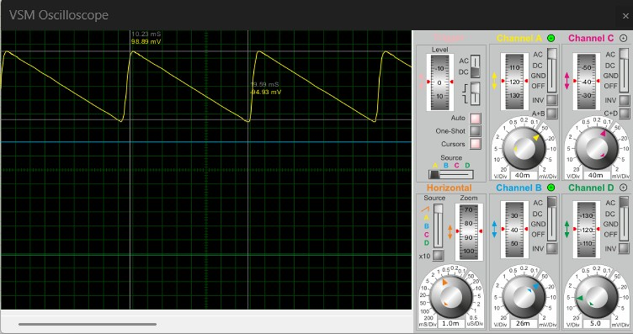

01 · Step down
A 12-0-12 V center-tapped transformer lowers the AC input to the required secondary voltage.
A multi-output DC bench supply designed in NI Multisim, calculated stage by stage, then assembled and tested as a soldered hardware prototype at Nile University.
A linear supply architecture validated through simulation and physical measurements.
A 12-0-12 V center-tapped transformer lowers the AC input to the required secondary voltage.
A 2W005G bridge rectifier and 2200 µF filter capacitors convert rectified AC into smoother DC rails.
78xx/79xx fixed regulators and LM317/LM337 adjustable regulators provide six output rails.
Reported measurements compared with NI Multisim targets.
| Output | Simulated | Measured | Error |
|---|---|---|---|
| +5 V fixed | 5.01 V | 4.93 V | 1.59% |
| −5 V fixed | −5.03 V | −4.96 V | 1.39% |
| +9 V fixed | 9.01 V | 9.29 V | 3.11% |
| −9 V fixed | −9.01 V | −9.08 V | 0.78% |
| +12 V adjustable | 11.8 V | 12.26 V | 3.90% |
| −12 V adjustable | −11.9 V | −12.27 V | 3.11% |
All six measured rails were within 4% of their simulated targets. The largest reported deviation was 3.90% on the adjustable positive rail.
Soldered board, custom enclosure, six output terminals, ground reference, adjustment dials, and indicator LEDs.

Selected evidence from the recorded rail measurements.



Design team
Abdullah Salem · Abdullah Mohamed · Mohamed Sallam · Ziad Ali
Supervisor
Dr. Mohamed Elhossainy
Electrical Engineering II (MNG 232) · Nile University · May 9, 2026